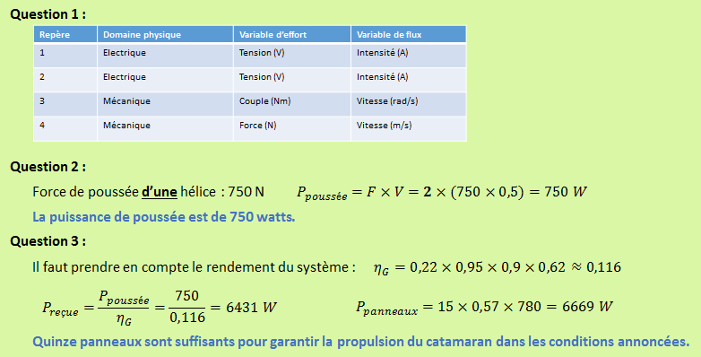
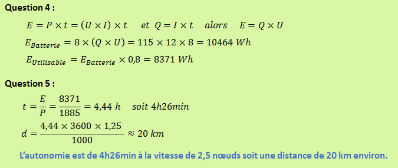

S.I. - S4 - Caractériser l'énergie et la puissance des systèmes
Page optimisée pour Firefox -------------------------------- AC@NDSF
Séquence 4
Accueil
La chaine d'énergie
Etude de cas
Activités TP
Activités TD
Compétences
Etude de cas : Solutions


Retour en haut de la page
RETOUR à la page
Etude de cas